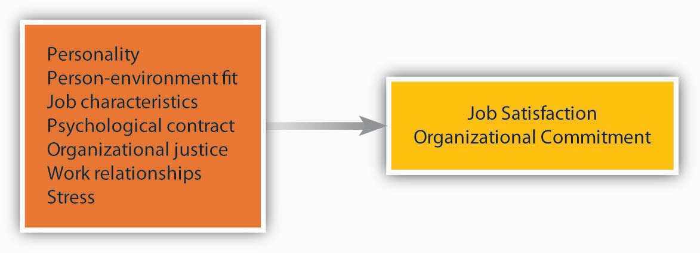

How we behave at work often depends on how we feel about being there. Therefore, making sense of how people behave depends on understanding their work attitudes. An attitudeOur opinions, beliefs, and feelings about aspects of our environment. refers to our opinions, beliefs, and feelings about aspects of our environment. We have attitudes toward the food we eat, people we meet, courses we take, and things we do. At work, two job attitudes have the greatest potential to influence how we behave. These are job satisfaction and organizational commitment.
Job satisfactionThe feelings people have toward their job. refers to the feelings people have toward their job. If the number of studies conducted on job satisfaction is an indicator, job satisfaction is probably the most important job attitude. Institutions such as Gallup or the Society for Human Resource Management (SHRM) periodically conduct studies of job satisfaction to track how satisfied employees are at work. According to a recent Gallup survey, 90% of the employees surveyed said that they were at least somewhat satisfied with their jobs. A recent SHRM study revealed 40% who were very satisfied.Anonymous. (2007, August). What keeps employees satisfied? HR Focus, 10–13; Sandberg, J. (2008, April 15). For many employees, a dream job is one that isn’t a nightmare. Wall Street Journal, B1.
Organizational commitmentThe emotional attachment people have toward the company they work for. is the emotional attachment people have toward the company they work for. A highly committed employee is one who accepts and believes in the company’s values, is willing to put out effort to meet the company’s goals, and has a strong desire to remain with the company. People who are committed to their company often refer to their company as “we” as opposed to “they” as in “in this company, we have great benefits.” The way we refer to the company indicates the type of attachment and identification we have with the company.
There is a high degree of overlap between job satisfaction and organizational commitment because things that make us happy with our job often make us more committed to the company as well. Companies believe that these attitudes are worth tracking because they often are associated with outcomes that are important to the Controlling role, such as performance, helping others, absenteeism, and turnover.
What makes you satisfied with your job and develop commitment to your company? Research shows that people pay attention to several factors of their work environment, including characteristics of the job (a function of Organizing activities), how they are treated (related to Leadership actions), the relationships they form with colleagues and managers (also Leadership related), and the level of stress the job entails.
As we have seen earlier in this chapter, personality and values play important roles in how employees feel about their jobs.
Figure 2.14 Factors Contributing to Job Satisfaction and Organizational Commitment
Employees tend to be more satisfied and committed in jobs that involve certain characteristics. The ability to use a variety of skills, having autonomy at work, receiving feedback on the job, and performing a significant task are some job characteristics that are related to satisfaction and commitment. However, the presence of these factors is not important for everyone. Some people have a high need for growth. These employees tend to be more satisfied when their jobs help them build new skills and improve.Loher, B. T., Noe, R. A., Moeller, N. L., & Fitzgerald, M. P. (1985). A meta-analysis of the relation of job characteristics to job satisfaction. Journal of Applied Psychology, 70, 280–289; Mathieu, J. E., & Zajac, D. M. (1990). A review and meta-analysis of the antecedents, correlates, and consequences of organizational commitment. Psychological Bulletin, 108, 171–194.
A strong influence over our satisfaction level is how fairly we are treated. People pay attention to the fairness of company policies and procedures, fair and kind treatment from supervisors, and fairness of their pay and other rewards they receive from the company.Cohen-Charash, Y., & Spector, P. E. (2001). The role of justice in organizations: A meta-analysis. Organizational Behavior and Human Decision Processes, 86, 278–321; Colquitt, J. A., Conlon, D. E., Wesson, M. J., Porter, C. O. L. H., & Ng, K. Y. (2001). Justice at the millennium: A meta-analytic review of 25 years of organizational justice research. Journal of Applied Psychology, 86, 425–445; Meyer, J. P., Stanley, D. J., Herscivitch, L., & Topolnytsky, L. (2002). Affective, continuance, and normative commitment to the organization: A meta-analysis of antecedents, correlates, and consequences. Journal of Vocational Behavior, 61, 20–52. Organizational justice can be classified into three categories: (1) procedural (fairness in the way policies and processes are carried out), (2) distributive (the allocation of resources or compensation and benefits), and (3) interactional (the degree to which people are treated with dignity and respect). At the root of organizational justice is trust, something that is easier to break than to repair if broken.
The psychological contractThe unspoken, informal understanding that an employee will contribute certain things to the organization and will receive certain things in return. is the unspoken, informal understanding that an employee will contribute certain things to the organization (e.g., work ability and a willing attitude) and will receive certain things in return (e.g., reasonable pay and benefits). Under the psychological contract, an employee may believe that if he or she works hard and receives favorable performance evaluations, he or she will receive an annual bonus, periodic raises and promotions, and will not be laid off. Since the “downsizing” trend of the past 20 years, many commentators have declared that the psychological contract is violated more often than not.
Two strong predictors of our happiness at work and commitment to the company are our relationships with coworkers and managers. The people we interact with, how friendly they are, whether we are socially accepted in our work group, whether we are treated with respect by them are important to our happiness at work. Research also shows that our relationship with our manager, how considerate the manager is, and whether we build a trust-based relationship with our manager are critically important to our job satisfaction and organizational commitment.Bauer, T. N., Bodner, T., Erdogan, B., Truxillo, D. M., & Tucker, J. S. (2007). Newcomer adjustment during organizational socialization: A meta-analytic review of antecedents, outcomes, and methods. Journal of Applied Psychology, 92, 707–721; Gerstner, C. R., & Day, D. V. (1997). Meta-analytic review of leader-member exchange theory: Correlates and construct issues. Journal of Applied Psychology, 82(6), 827–844; Judge, T. A., Piccolo, R. F., & Ilies, R. (2004). The forgotten ones? The validity of consideration and initiating structure in leadership research. Journal of Applied Psychology, 89, 36–51; Kinicki, A. J., McKee-Ryan, F. M., Schriesheim, C. A., & Carson, K. P. (2002). Assessing the construct validity of the job descriptive index: A review and meta-analysis. Journal of Applied Psychology, 87, 14–32; Mathieu, J. E., & Zajac, D. M. (1990). A review and meta-analysis of the antecedents, correlates, and consequences of organizational commitment. Psychological Bulletin, 108, 171–194; Meyer, J. P., Stanley, D. J., Herscivitch, L., & Topolnytsky, L. (2002). Affective, continuance, and normative commitment to the organization: A meta-analysis of antecedents, correlates, and consequences. Journal of Vocational Behavior, 61, 20–52; Rhoades, L., & Eisenberger, R. (2002). Perceived organizational support: A review of the literature. Journal of Applied Psychology, 87, 698–714. When our manager and overall management listen to us, care about us, and value our opinions, we tend to feel good at work. When establishing effective relations with employees, little signals that you care about your employees go a long way. For example, in 2004 San Francisco’s Hotel Carlton was taken over and renovated by a new management group, Joie de Vivre Hospitality. One of the small things the new management did that created dramatic results was that, in response to an employee attitude survey, they replaced the old vacuum cleaners housekeepers were using and started replacing them every year. It did not cost the company much to replace old machinery, but this simple act of listening to employee problems and taking action went a long way to make employees feel better.Dvorak, P. (2007, December 17). Theory and practice: Hotelier finds happiness keeps staff checked in; focus on morale boosts Joie de Vivre’s grades from workers, guests. Wall Street Journal, B3.
Not surprisingly, the amount of stress present in a job is related to employee satisfaction and commitment. Stressors range from environmental ones (noise, heat, inadequate ventilation) to interpersonal ones (organizational politics, conflicts with coworkers) to organizational ones (pressure to avoid making mistakes, worrying about the security of the job). Some jobs, such as intensive care unit nurse and military fighter pilot, are inherently very stressful.
Another source of stress has to do with the roles people are expected to fulfill on and off the job. Role ambiguity is uncertainty about what our responsibilities are in the job. Role conflict involves contradictory demands at work; it can also involve conflict between fulfilling one’s role as an employee and other roles in life, such as the role of parent, friend, or community volunteer.
Generally speaking, the higher the stress level, the lower job satisfaction tends to be. But not all stress is bad, and some stressors actually make us happier! For example, working under time pressure and having a high degree of responsibility are stressful, but they are also perceived as challenges and tend to be related to high levels of satisfaction.Kinicki, A. J., McKee-Ryan, F. M., Schriesheim, C. A., & Carson, K. P. (2002). Assessing the construct validity of the job descriptive index: A review and meta-analysis. Journal of Applied Psychology, 87, 14–32; Meyer, J. P., Stanley, D. J., Herscivitch, L., & Topolnytsky, L. (2002). Affective, continuance, and normative commitment to the organization: A meta-analysis of antecedents, correlates, and consequences. Journal of Vocational Behavior, 61, 20–52; Miller, B. K., Rutherford, M. A., & Kolodinsky, R. W. (2008). Perceptions of organizational politics: A meta-analysis of outcomes. Journal of Business and Psychology, 22, 209–222; Podsakoff, N. P., LePine, J. A., & LePine, M. A. (2007). Differential challenge stressor-hindrance stressor relationships with job attitudes, turnover intentions, turnover, and withdrawal behavior: A meta-analysis. Journal of Applied Psychology, 92, 438–454.
Given that work attitudes may give us clues about who will leave or stay, who will perform better, and who will be more engaged, tracking satisfaction and commitment levels is a helpful step for companies. If there are companywide issues that make employees unhappy and disengaged, these need to be resolved. There are at least two systematic ways in which companies can track work attitudes: through attitude surveysSurveys that are given to employees tracking their work attitudes. and exit interviews. Companies such as KFC and Long John Silver restaurants, the SAS Institute, Google, and others give periodic attitude surveys, which are used to track employee work attitudes. Companies can get more out of these surveys if responses are held confidential. If employees become concerned that their individual responses will be shared with their immediate manager, they are less likely to respond honestly. Moreover, success of these surveys depends on the credibility of management in the eye of employees. If management periodically collects these surveys but no action comes out of them, employees may adopt a more cynical attitude and start ignoring these surveys, hampering the success of future efforts. Exit interviewsA meeting with the departing employee. involve a meeting with the departing employee. This meeting is often conducted by a member of the human resource management department. If conducted well, this meeting may reveal what makes employees dissatisfied at work and give management clues about areas for improvement.
How strong is the attitude-behavior link? First of all, it depends on the attitude in question. Your attitudes toward your colleagues may influence whether you actually help them on a project, but they may not be a good predictor of whether you quit your job. Second, it is worth noting that attitudes are more strongly related to intentions to behave in a certain way, rather than actual behaviors. When you are dissatisfied with your job, you will have the intention to leave. Whether you actually leave will be a different story! Your leaving will depend on many factors, such as availability of alternative jobs in the market, your employability in a different company, and sacrifices you have to make while changing jobs. Thus, while the attitudes assessed through employee satisfaction surveys and exit interviews can provide some basis for predicting how a person might behave in a job, remember that behavior is also strongly influenced by situational constraints.
Work attitudes are the feelings we have toward different aspects of the work environment. Job satisfaction and organizational commitment are two key attitudes that are the most relevant to important outcomes. In addition to personality and fit with the organization, work attitudes are influenced by the characteristics of the job, perceptions of organizational justice and the psychological contract, relationships with coworkers and managers, and the stress levels experienced on the job. Many companies assess employee attitudes through surveys of worker satisfaction and through exit interviews. The usefulness of such information is limited, however, because attitudes create an intention to behave in a certain way, but they do not always predict actual behaviors.